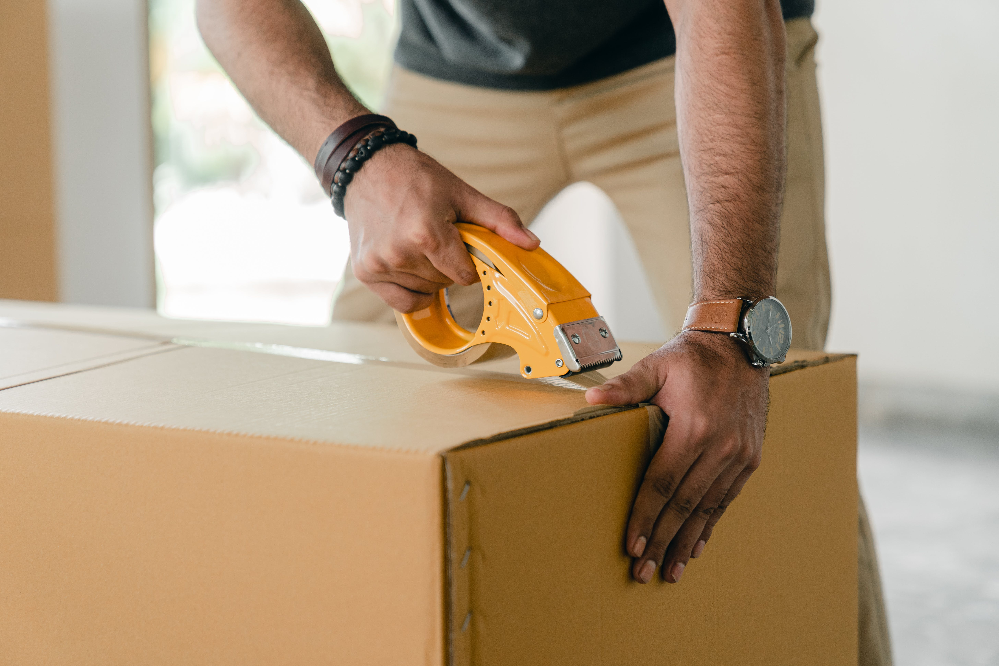

Turning complaints into opportunities: Use of technology to enhance and perfect the customer service experience.

On 20th August 2022,
In a rapidly globalizing world, the efficient and secure transportation of products has become a
crucial aspect of international trade.
Companies that can offer fast and safe worldwide shipping have a significant competitive advantage
in the global marketplace.
Our company prides itself on its exceptional shipping services, guaranteeing swift and secure
deliveries to customers around the world.
This essay will explore the reasons why our worldwide shipping is both fast and safe, illustrating
the benefits our customers can enjoy.
One of the key factors that contribute to our fast shipping is our extensive network of logistics
partners.
We have collaborated with renowned shipping companies worldwide, leveraging their expertise and
infrastructure to streamline our shipping processes.
These partnerships allow us to access a vast fleet of ships, planes, and trucks, ensuring that our
products can be transported quickly to any destination.
Whether it's a remote town in South America or a bustling city in Asia, our global network ensures
that our products reach customers as promptly as possible.
Furthermore, our company invests heavily in state-of-the-art tracking technology.
Through advanced tracking systems, we can monitor the entire shipping journey, from the moment the
product leaves our warehouse to its arrival at the customer's doorstep.
This allows us to offer real-time updates to our customers, providing them with full transparency
and peace of mind.
By knowing the exact location and status of their order, customers can plan accordingly and have
confidence in the reliability of our shipping services.
In addition to speed, the safety of our worldwide shipping is of paramount importance to us.
We understand that customers entrust us with their valuable goods, and it is our responsibility to
ensure their safe arrival.
To achieve this, we have implemented rigorous security protocols at every stage of the shipping
process. From secure packaging to comprehensive documentation, we take every precaution to protect
the integrity of our products.
Our collaboration with trusted shipping partners further reinforces our commitment to safety, as
they adhere to industry-standard security measures and hold necessary certifications.
To enhance the speed of our shipping process, we have embraced cutting-edge technologies.
Our state-of-the-art tracking system allows both us and our customers to monitor the progress of
each shipment in real-time.
This transparency provides peace of mind to our customers, as they can track their orders from the
moment they leave our warehouse until they reach their final destination.
Furthermore, our use of advanced inventory management systems ensures that our products are readily
available for shipping, reducing delays and minimizing the risk of backorders.
Moreover, our company prioritizes customer satisfaction, and this extends to our shipping services.
We have a dedicated customer service team that is readily available to address any concerns or
inquiries related to shipping.
Whether it's a shipping delay or a missing item, our team works diligently to resolve issues
promptly and efficiently.
By providing exceptional customer support, we strive to ensure that our customers feel supported
throughout the entire shipping experience.
This level of care and attention sets us apart from our competitors, fostering long-term
relationships with our customers based on trust and satisfaction.
In conclusion, our company takes pride in offering fast and safe worldwide shipping.
Through strategic partnerships, advanced tracking technology, comprehensive security protocols, and
excellent customer service, we have established ourselves as a dependable provider of shipping
services.
We recognize the importance of timely and secure transportation in today's global economy, and we
continuously strive to exceed customer expectations.
With our commitment to efficiency and safety, our customers can have the utmost confidence in the
global shipping solutions we offer.